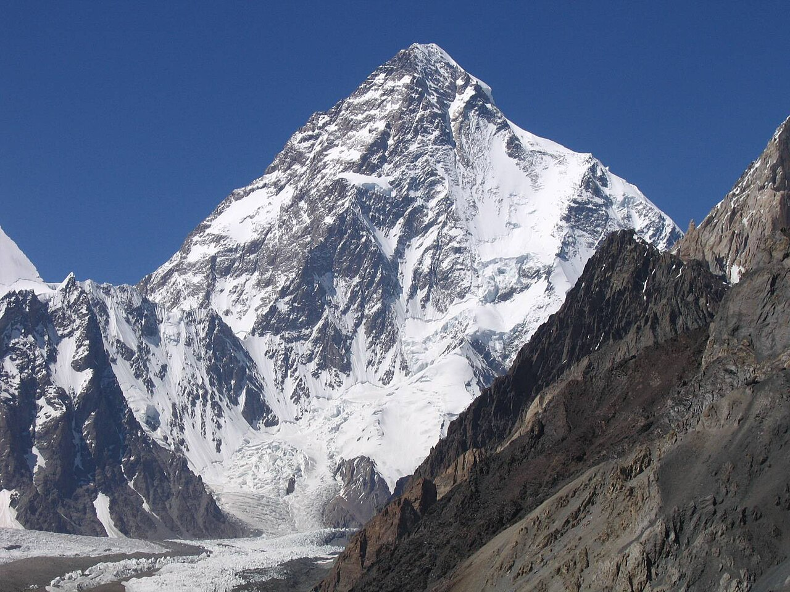
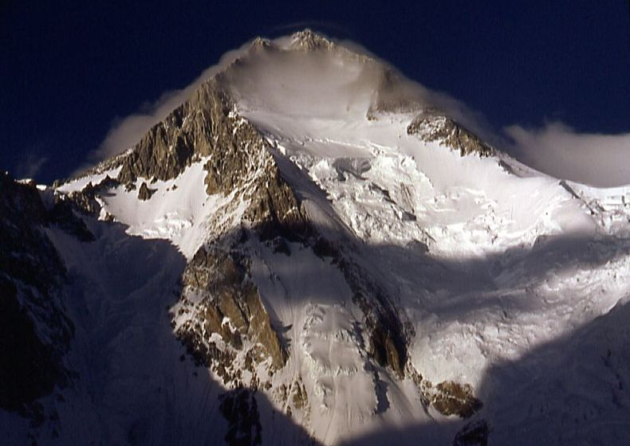

Эверест является частью цепи Гималайских гор. Его южная вершина проходит вдоль границы КНР и Непала, а северная часть примыкает к территории Китайской Народной Республики. «Джомолунгма» — это тибетское слово, означающее «Божественная мать жизненной энергии».
Гору назвали в честь богини Шераб Чжаммы, которая олицетворяла собой материнскую энергию. Своей формой гора Эверест напоминает трёхгранную пирамиду с более крутым южным склоном.
Чогори известна как «Дикая гора» (Savage Mountain) из-за чрезвычайной сложности восхождения. Достигнуть пика Чогори с китайской стороны труднее и опаснее, поэтому на него обычно поднимаются с пакистанской стороны. Чогори стала последним восьмитысячником, покорённым в зимний период.
Достигнуть пика Чогори с китайской стороны труднее и опаснее, поэтому на него обычно поднимаются с пакистанской стороны. Чогори стала последним восьмитысячником, покорённым в зимний период
Гору назвали в честь богини Шераб Чжаммы, которая олицетворяла собой материнскую энергию. Своей формой гора Эверест напоминает трёхгранную пирамиду с более крутым южным склоном.
Чогори известна как «Дикая гора» (Savage Mountain) из-за чрезвычайной сложности восхождения. Достигнуть пика Чогори с китайской стороны труднее и опаснее.